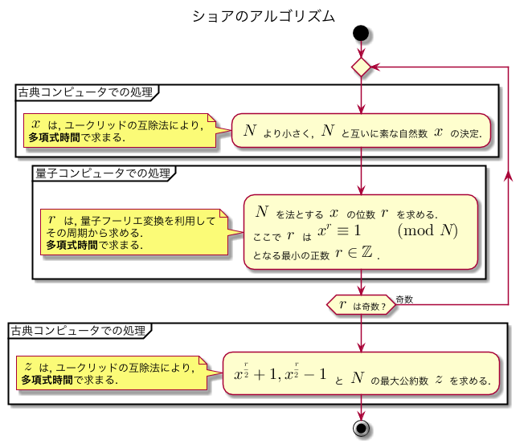
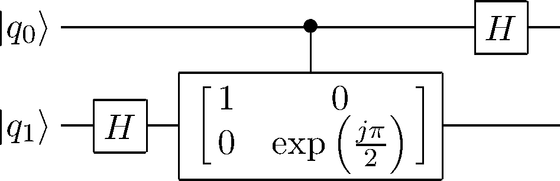

お題自由な学校のレポート課題1内で, ショアのアルゴリズムを説明するために QFT の概要について示したのだが, 折角なのでその内容の一部を抜粋し, こちらのブログのほうにも載せておくことにした. ショアのアルゴリズムについては, 調べればいくらでも出てくるし, 学会誌, 書籍等で分かり易く述べられていることも多いので, 本エントリで特別取り上げることはしないが, その大体は以下のアクティビティ図の手順の通りである2.

なお, 私自身は量子力学, 量子コンピュータ分野における専門家ではないため, 注意してください. 間違った箇所, 不自然な箇所等ございましたら, ご報告いただけると幸いです.
まず, DFT を次のようにおく3. \[\displaystyle F(t) = \sum_{x = 0}^{n-1} f(x)\exp\left(-j\dfrac{2\pi tx}{n}\tag{1}\label{eq:third}\right)\] ここで, \(f(x)\) は入力の関数, \(j\) は虚数単位である. QFT は, 正規化係数を \(\dfrac{1}{\sqrt{n}}\) とした有限次元内積空間内における正規直交基底 \(|0\rangle, \cdots, |n-1\rangle\) 上の状態, \(\displaystyle \sum_{x=0}^{n-1} f(x)|x\rangle\) の各係数となる複素関数の値を離散フーリエ変換したものであるといえる. すなわち, 式 \(\eqref{eq:third}\) の定義をふまえて, \[\displaystyle \sum_{x = 0}^{n-1} f(x)|x\rangle \mapsto \sum_{i = 0}^{n-1}F(i) |i\rangle\] または, \[\displaystyle |x\rangle \mapsto \dfrac{1}{\sqrt{n}}\sum_{k=0}^{n-1}\exp\left(-j\dfrac{2\pi xk}{n}\right) |k\rangle\] と表すことができ, いま \(m\) Qubit があるならば, 扱えるデータ数は \(2^m\) となるため \[\displaystyle |x\rangle \mapsto \dfrac{1}{\sqrt{2^m}}\sum_{k=0}^{2^m-1}\exp\left(-j\dfrac{2\pi xk}{2^m}\right) |k\rangle\] と表せる. これを量子回路として実装していく. 結論から言うと, この量子回路は, アダマールゲートと, 制御ビットが \(1\) のときのみ, 信号量子ビットの位相を \(\exp\left(\dfrac{j2\pi}{2^{k+1}}\right)\) だけシフトする 制御位相シフトゲートを利用することで実現できる. 次に, 2 Qubit を用いた QFT の量子回路図を示す4.

ここで \(|q_1\rangle\) は \[|0\rangle + \exp\left(j\pi q_{1}\right)|1\rangle \to |0\rangle + \exp\left(\dfrac{j\pi}{2}(2q_1+q_0)\right)|1\rangle \tag{2}\label{eq:fourth}\] と変化し, \(|q_0\rangle\) は \[|0\rangle + \exp\left(j\pi q_{0}\right)|1\rangle \tag{3}\label{eq:fifth}\] と変化することがいえる. いま, 式 \(\eqref{eq:fourth}\) の結果を \(|a_0\rangle\), 式 \(\eqref{eq:fifth}\) の結果を \(|a_1\rangle\) としたとき
がいえる. ここで, \(q\) および \(a\) の値の \(2\) 進表記をそれぞれ \([q_1, q_0],\ [a_1, a_0]\) とすると, \(q = 2q_1 + q_0,\ a = 2a_1+a_0\) であるので式 \(\eqref{eq:sixth}\) は,
と展開できる. \(|a\rangle\) の各状態の係数が \(|q\rangle\) の各状態の係数のフーリエ変換になっていることがわかる.